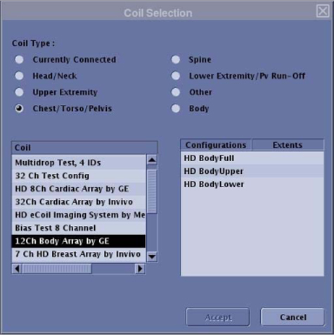
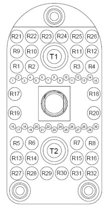

Operating Documentation
Direction 5500113, Rev# 3
Discovery MR450 1.5T Service Methods
Module Version 8.0, Version Date 10/26/09
Operating Documentation |
| Required Persons | Procedure |
| 1 | 30 min. |
The following tips can be used to troubleshoot common problems with the 12-Channel Body Array Coil for the MR450/MR450w P-Connector and the single and dual connector coil for the HDx or HDxt system.
| NOTE: | Legacy coils are shipped with coil-specific phantoms and positioners. New coils do not ship with phantoms. Phantoms and positioners come in a unified phantom set with the MR system. |
| Item | Quantity | Part Number |
| Digital Volt Meter | 1 | - |
(For Unified Phantom Set) TL Unified Phantom | 2 | 5343347 |
(For Legacy Phantom Set) Legacy Phantom Kit | 1 | 2377425-3 |
Some tests may require FRUs for diagnosis.
The 1.5T 12-Channel Body Array Coil must be installed on the HDx, HDxt, MR450 or MR450w system.
GE_HDx BodyUpper
GE_HDx BodyLower
GE_HDx BodyFull
Problem:
Unable to pre-scan or scanning, but receiving no signal.
Possible Solution:
Verify that the port, used to plug in the coil, either has a green light illuminated or green lock (Port P1, P2 or P3, P4) indicated. This indicates the coil is properly plugged into the system.
Verify that the system has correctly detected the coil by checking in the “Currently Connected” window in the GUI to select coils in Rx as shown in the example in Illustration 1.
Illustration 1: Currently Selected Coils Window on the Scan Screen

Verify that the scan locations and any FOV offsets are correct.
Perform a Continuity Check on the output cable (Section 4.4). This must be performed by a GE-authorized Service Engineer.
Verify that the coil is positioned with the cable exiting toward the bore.
Verify that the cable is not looped or crossed.
A problem can also exist at the system interface port. Try swapping both the connectors in the A and B ports. If still unable to get a signal, try to scan (transmit and receive) with the body coil. For this test, be sure to remove the imaging coil from the magnet bore before scanning with the body coil.
If still receiving no signal, the problem probably lies with the MR system.
If the scan completes successfully, there could be a problem with the coil. Contact GE for further assistance. If unable to scan with the substitute coil, there may be a system problem related to this particular coil type.
Problem:
Poor IQ, shaded images, or if MCQA fails.
Possible Solution:
Perform a Continuity Check on the output cable (Section 4.4). This must be performed by a GE-authorized Service Engineer.
Verify that there are no loops in the cables.
Verify that there are no metal or ferromagnetic objects close to the coil, patient or magnet (i.e., safety pin, hair pin).
Verify that the coil is properly positioned.
Verify that the center frequency is within the frequency adjustment range for the system.
Verify that the R1, R2 and TG values from the pre-scan are within normally expected ranges.
If not already done, perform the coil Multi-Coil Quality Assurance (MCQA) Tool. If the values obtained do not fall within normal operating parameters, investigate this further by performing a phantom scan with the body coil. For this test, be sure to remove the imaging coil from the magnet bore before scanning with the body coil. If still having the same problems, there could be an MR system problem.
If the body coil scan is satisfactory, acquire a scan using another coil of the same type (receive-only, phased array).
If the image quality is visibly improved, there may be a problem with the coil. Contact GE for further assistance.
Problem:
Black line or signal void on the image.
Possible Solution:
Verify there is no metal present in the area being scanned in or on the patient.
Before removing the cable assembly from the coil, visually inspect all coaxial connectors and pins on the coil connector. Illustration 2 shows the pin layout of the single coil connector for an HDx or HDxt system. If there are any broken, deformed or recessed pins or coaxial connectors, replace the cable assembly.
| ||||
| Under no circumstances should the continuity of the center pin of the coax connectors be measured. They are extremely fragile when improper tools are used. | ||||
| NOTE: | There are two connectors in the dual connector coils. |
Illustration 2: Pin Layouts of Hypertronics Connector

Remove the cable assembly from the posterior and unplug the P-Connector from the anterior. Refer to Cable Replacement, Section 3.1.
Use a DVM to ensure an open circuit condition exists between the system connector and posterior coil-side RF cables. (See Illustration 3 and Table 1.) Similarly, ensure an open-circuit condition between the system connector and the anterior P-Connector. (See Illustration 4 and Table 2.) Use Illustration 5 as a pin layout reference for the P-Connector.
If the test fails, perform Cable Replacement.
Check for continuity in DC cables from the system connector to anterior connector and system connector to posterior.
Illustration 3: Coil-Side RF Cables for the Posterior Section

Table 1: Hypertronics/P-Connector Single Connector RF Allocation for Posterior
| P-Connector | Hypertronics Connector | SMB Connectors from Cable Trap-Coaxial Cable Color |
| R9 | G1 | Clear coax |
| R10 | G2 | Brown coax |
| R11 | G3 | Red coax |
| R12 | G4 | Orange coax |
| R13 | H1 | Yellow coax |
| R14 | H2 | Black coax |
Table 2: Hypertronics/P-Connector Single Connector RF Allocation for Anterior
| P-Connector | Hypertronics Connector | P-Connector (RF from Left to Right) |
| R1 | C1 | O6 |
| R2 | C2 | O1 |
| R3 | C3 | O4 |
| R4 | C4 | O3 |
| R5 | D1 | O5 |
| R6 | D2 | O2 |
Illustration 4: Anterior P-Connector RF Allocation

Illustration 5: Pin Layout of P-Connector

Measure the open circuit condition P-Connector and P-Connector DC pins or between Hypertronics Connector and P-Connector DC pins. (See Table 3.) Use Illustration 5 as a pin layout reference for the P-Connector.
If the test fails, perform Cable Replacement.
Table 3: Hypertronics/P-Connector Single Connector DC Allocation for Anterior
| P-Connector | Hypertronics connector | P-Connector DC Pins |
| R1 | C1 | Pin 10 |
| R2 | C2 | Pin 5 |
| R3 | C3 | Pin 9 |
| R4 | C4 | Pin 6 |
| R5 | D1 | Pin 8 |
| R6 | D2 | Pin 7 |
Measure the open circuit condition between P-Connector and 8-pin Header or between Hypertronics Connector and 8-pin Header. (See Table 4.)
If the test fails, replace the cable.
Table 4: Hypertronics/P-Connector Single Connector DC Allocation for Posterior
| P-Connector | Hypertronics Connector | Posterior Trap 8-pin Header DC Wire Colors |
| R9 | G1 | Brown/White |
| R10 | G2 | Orange |
| R11 | G3 | Yellow |
| R12 | G4 | Green |
| R13 | H1 | Blue |
| R14 | H2 | Violet |
Measure resistance using a DVM between the System Connector pins and P-Connector DC pins. (See Table 5, columns 3 and 4.)
Measure resistance between the System Connector DC pins and posterior 8-pin Header. See Table 5, columns 1 and 2. The resistance between the pins should be ≤2.7Ω.
If the resistance measured does not pass specification, perform Cable Replacement.
Table 5: Measure DC Resistance Between Pins Mentioned Below
| DC Resistance from Hypertronics System Connector to Posterior Trap Wires (≤2.7Ω) | DC Resistance from Hypertronics System Connector to Anterior P-Connector (≤2.7Ω) | DC Resistance from P-Connector to Posterior Trap Wires ( ≤2.7Ω) | DC Resistance from P-Connector to Anterior P-Connector ( ≤2.7Ω) |
| G1 to Brown wire | C1 to Pin 10 | R9 to Brown wire | R1 to Pin 10 |
| G2 to Orange wire | C2 to Pin 5 | R10 to Orange wire | R2 to Pin 5 |
| G3 to Yellow wire | C3 to Pin 9 | R11 to Yellow wire | R3 to Pin 9 |
| G4 to Green wire | C4 to Pin 6 | R12 to Green wire | R4 to Pin 6 |
| H1 to Blue wire | D1 to Pin 8 | R13 to Blue wire | R5 to Pin 8 |
| H2 to Violet wire | D2 to Pin 7 | R14 to Violet wire | R6 to Pin 7 |